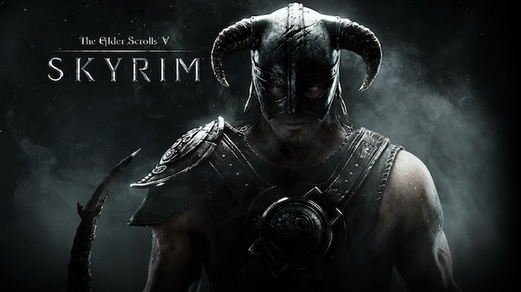

Release Data:
November 11, 2011
EPIC FANTASY REBORN The next chapter in the highly anticipated Elder Scrolls saga
arrives from the makers of the 2006 and 2008 Games of the Year, Bethesda Game
Studios. Skyrim reimagines and revolutionizes the open-world fantasy epic, bringing to life a
complete virtual world open for you to explore.